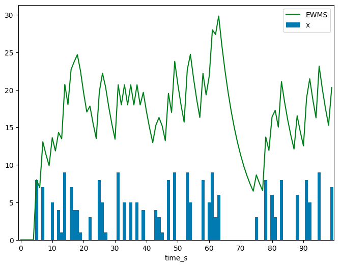
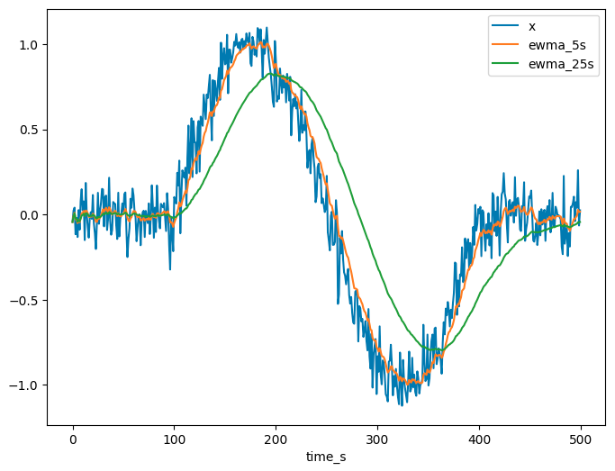

Context
Given a floating-point array $\boldsymbol{x} \in \mathbb{R}^N$ and a corresponding array of non-decreasing, integer, epoch timestamps $\boldsymbol{t} \in \mathbb{Z}^N$, we can compute an exponentially weighted/decayed moving sum (EWMS) or moving average (EWMA) of $\boldsymbol{x}$ using a single-pass algorithm. These are common time series operations useful for "smoothing" noisy observations or isolating trends in data; and the single-pass algorithms implemented in this article are performant for large datasets and can be applied to live data streams without needing to store previous observations in memory.
EWMS Definition
Given an elapsed time of $t$ seconds and a half life of $\tau$ seconds, the exponential decay factor is defined as $$\alpha \> = \> 2^{-\frac{t}{\tau}} \in (0,1],$$ which equals $1$ when $t = 0$ (no decay has occurred), equals $\frac{1}{2}$ when $t = \tau$ (hence the name half life), and approaches $0$ as $t \rightarrow \infty$. Hence, for some index $n \in [1, N]$, the exponentially weighted sum of the first $n$ observations of the array $\boldsymbol{x}$ with timestamps $\boldsymbol{t}$ and half life $\tau$ is $$\rho_n \> = \> \sum_{i=1}^n w_{i,n} x_i$$ with decay weights $$w_{i,n} \> = \> 2^{-\frac{t_n - t_i}{\tau}}.$$ The exponentially weighted moving sum of $\boldsymbol{x}$ is the array $\boldsymbol{\rho} \in \mathbb{R}^n$ of these weighted sums. For example, if $x_n$ counts the occurrences of some event at timestep $t_n$, then the EWMS represents a moving tally of "recent" occurrences of this event, where occurrences further in the past are weighted less.
EWMS Algorithm Derivation
To define a recurrence relation for $\rho_n$, start by isolating the $n^{\text{th}}$ term from the sum, so $$\rho_n \> = \> \sum_{i=1}^n w_{i,n} x_i \> = \> w_{n,n} x_n + \sum_{i=1}^{n-1} w_{i,n} x_i.$$ Using the definition of the decay weights, notice that $$w_{n,n} \> = \> 2^{-\frac{t_n - t_n}{\tau}} \> = \> 2^{-\frac{0}{\tau}} \> = \> 1,$$ which makes sense, because the $n^{\text{th}}$ observation has just occurred and hence should not be decayed. Now, for the other weights (where $1 \leq i \leq n-1$), $$\begin{aligned} w_{i,n} \> &= \> 2^{-\frac{t_n - t_i}{\tau}} \\ &= \> 2^{-\frac{(t_n - t_{n-1}) + (t_{n-1} - t_i)}{\tau}} \\ &= \> 2^{\left( - \frac{t_n - t_{n-1}}{\tau} - \frac{t_{n-1} - t_i}{\tau}\right)} \\ &= \> 2^{-\frac{t_n - t_{n-1}}{\tau}} 2^{-\frac{t_{n-1} - t_i}{\tau}} \\ &= \> \alpha_n w_{i,n-1}, \end{aligned}$$ where $\alpha_n$ is the decay factor given the elapsed time $t_n - t_{n-1}$ seconds from the $(n-1)^{\text{th}}$ to the $n^{\text{th}}$ observation. Substituting these weight equivalences back into the expanded definition of $\rho_n$ gives $$\begin{aligned} \rho_n \> &= \> w_{n,n} x_n + \sum_{i=1}^{n-1} w_{i,n} x_i \\ &= \> x_n + \sum_{i=1}^{n-1} \alpha_n w_{i,n-1} x_i \\ &= \> x_n + \alpha_n \sum_{i=1}^{n-1} w_{i,n-1} x_i \\ &= \> x_n + \alpha_n \rho_{n-1}, \end{aligned}$$ for $n$ > 1, meaning $\rho_n$ can be computed given the previous EWMS $\rho_{n-1}$, the decay factor $\alpha_n$ and the $n^{\text{th}}$ observation $x_n$. This recurrence relation is initialised by simply setting $\rho_1 = x_1$.
EWMS Implementation
The recurrence relation derived above provides the basis for computing the EWMS of an array with a single-pass algorithm. To achieve the best performance (i.e., the fastest runtime) for large datasets, we will utilise Numba, a Python library that translates decorated functions into optimised machine code at runtime. This allows a programmer to benefit from the simplicity of Python syntax whilst still achieving C-like performance. The other library we will use is Numpy, which is Python's most popular numerical computing library which provides a powerful array data type as well as a wide range of mathematical functions. Numba supports a subset of in-built Python & Numpy functionality that is more than sufficient for writing our EWMS algorithm, which is shown below:
from numba import njit, float64, int64
import numpy as np
@njit(float64[:](int64[:], float64[:], int64, float64))
def np_ewms(time_s, values, half_life_s, min_nonzero_ewms):
ewms_array = np.full(len(time_s), np.nan, dtype="float64")
ewms = 0.0
for n in range(len(time_s)):
if abs(ewms) <= min_nonzero_ewms:
ewms = 0.0
elif time_s[n] - time_s[n - 1] > 0:
ewms *= np.exp(-np.log(2) * (time_s[n] - time_s[n - 1]) / half_life_s)
if not np.isnan(values[n]) and values[n] != 0:
ewms += values[n]
ewms_array[n] = ewms
return ewms_array
The @njit decorator indicates that the function should be compiled "just in time" using Numba's JIT compiler,
and it specifies the input and output types of the function (this is not necessary, but it does speed up compilation as Numba
doesn't need to infer these types). This function takes four arguments:
time_s (int64[:])- a non-decreasing array of observation timestamps in seconds since the epoch,values (float64[:])- an array of floating point observation values,half_life_s (int64)- the half life of exponential decay in seconds, and-
min_nonzero_ewms (float64)- the value below which the EWMS is considered zero, which avoids unnecessary decay computation for negligible sums.
The floating point EWMS array is initialised with NaN values, and the current EWMS is initialised as zero. Iterating
through the input arrays, the function either sends a negligible EWMS to zero or decays the previous EWMS, multiplying it by
$\alpha_n$ = np.exp(-np.log(2) * (time_s[n] - time_s[n - 1]) / half_life_s), which is faster to compute than
np.power(2, -(time_s[n] - time_s[n - 1]) / half_life_s). If the current observation is not missing or zero, it is
added to the EWMS before this value is stored in the output array, which is returned by the function upon termination of the
loop.
EWMS Results
To verify that the EWMS algorithm works and visualise its output, we will generate some synthetic data and produce a plot
showing $\boldsymbol{\rho}$ and $\boldsymbol{x}$. To run this on your own machine, you will need to install the latest
versions of the following pip packages into a Python environment (e.g., virtualenv or conda):
numpy, Numba, Pandas and matplotlib. We start by using Numpy to generate
random observations alongside consecutive timestamps (both as Numpy arrays):
import numpy as np
N = 100
x_array = np.random.choice([1.0, 0.0], N, p=[0.5, 0.5]) * np.random.randint(low=1, high=10, size=N)
time_s_array = np.arange(N)
tau_s = 5
We imagine that each element of x_array counts the occurrences of some event at the corresponding timestamp in
time_s_array. This data can then be passed as input to our EWMS function, with the output saved to a new array:
ewms_array = np_ewms(time_s=time_s_array, values=x_array, half_life_s=tau_s, min_nonzero_ewms=1e-6)
We can assemble a Pandas dataframe from these Numpy arrays and use the pandas.DataFrame.plot function as a
shortcut to produce a matplotlib plot of the EWMS as a line graph superimposed on a bar chart of the original observations:
import pandas as pd
from matplotlib import pyplot as plt
df = pd.DataFrame({"time_s": time_s_array, "x": x_array, "ewms": ewms_array}).set_index("time_s")
df["x"].plot(kind="bar", width=1)
df["ewms"].plot(color="green")
plt.xticks(np.arange(N, step=10))
plt.legend(["EWMS", "x"])
plt.show()This code snippet will produce a plot like the one shown below, which demonstrates how the EWMS decays exponentially in the absence of new observations and increases instantaneously when a new observation is recorded.
EWMA Definition
The exponentially weighted average of the first $n$ observations of $\boldsymbol{x}$ with timestamps $\boldsymbol{t}$ and half life $\tau$ is equal to the exponentially weighted sum divided by the sum of the decay weights $W_n$, so $$\mu_n \> = \> \frac{\rho_n}{W_n} \> = \> \frac{\sum_{i=1}^n w_{i,n} x_i}{\sum_{i=1}^n w_{i,n}},$$ with the same decay weights that were used in the EWMS, $$w_{i,n} \> = \> 2^{-\frac{t_n - t_i}{\tau}}.$$ The exponentially weighted moving average of $\boldsymbol{x}$ is the array $\boldsymbol{\mu} \in \mathbb{R}^n$ of these weighted averages. For example, if $x_n$ records the value of some signal at timestep $t_n$, then the EWMA represents a smoothed history of the signal with outliers and noise reduced, where signal values further in the past contribute to the moving average less.
EWMA Derivation
In the EWMS derivation, it was demonstrated that $w_{n,n} = 1$ and for $1 \leq i \leq n-1$, $$w_{i,n} \> = \> \alpha_n w_{i,n-1}$$ where $$\alpha_n \> = \> 2^{-\frac{t_n - t_{n-1}}{\tau}}.$$ Substituting these equivalences into the definition of the weight sum gives $$\begin{aligned} W_n \> &= \> \sum_{i=1}^n w_{i,n} \\ &= \> w_{n,n} + \sum_{i=1}^{n-1} w_{i,n} \\ &= \> 1 + \sum_{i=1}^{n-1} \alpha_n w_{i,n-1} \\ &= \> 1 + \alpha_n \sum_{i=1}^{n-1} w_{i,n-1} \\ &= \> 1 + \alpha_n W_{n-1}, \end{aligned}$$ which is a recurrence relation for $W_n$ in terms of the previous weight sum $W_{n-1}$, that is initialised by setting $W_1 = 1$. Now, to derive a recurrence relation for $\mu_n$ in terms of $\mu_{n-1}$, recall the relation that was found for the EWMS: $$\rho_n \> = \> x_n + \alpha_n \rho_{n-1}.$$ Substituting this into the definition of the EWMA gives $$\begin{aligned} \mu_n \> &= \> \frac{\rho_n}{W_n} \\ &= \> \frac{x_n + \alpha_n \rho_{n-1}}{W_n} \\ &= \> \frac{x_n + \alpha_n W_{n-1} \mu_{n-1}}{W_n}, \\ &= \> \frac{x_n + (W_n - 1) \mu_{n-1}}{W_n}, \end{aligned}$$ meaning the EWMA $\mu_n$ can be computed from the previous EWMA $\mu_{n-1}$, the updated weight sum $W_n$ and the current observation $x_n$. This update rule also demonstrates that $\mu_n$ is a weighted average of $x_n$ and $\mu_{n-1}$, where the weight of $x_n$ is $1$ and the weight of $\mu_{n-1}$ is $W_n - 1$. The EWMA is initialised by setting $\mu_1 = x_1$.
EWMA Implementation
The pair of recurrence relations that we just derived form the basis of a single-pass algorithm for computing the EWMA of an array. This algorithm, which is also implemented in Python using Numpy and Numba, is shown below:
from numba import njit, float64, int64
import numpy as np
@njit(float64[:](int64[:], float64[:], int64))
def np_ewma(time_s, values, half_life_s):
ewma_array = np.full(len(time_s), np.nan, dtype="float64")
w_sum = 0.0
prev_time_s = -1
for n in range(len(time_s)):
if not np.isnan(values[n]):
if prev_time_s == -1:
w_sum = 1.0
ewma_array[n] = values[n]
else:
w_sum *= np.exp(-np.log(2) * (time_s[n] - prev_time_s) / half_life_s)
w_sum += 1.0
ewma_array[n] = (values[n] + (w_sum - 1.0) * ewma_array[n - 1]) / w_sum
prev_time_s = time_s[n]
elif n > 0:
ewma_array[n] = ewma_array[n - 1]
return ewma_arrayThis function takes three arguments:
time_s (int64[:])- a non-decreasing array of observation timestamps in seconds since the epoch,values (float64[:])- an array of floating point observation values, andhalf_life_s (int64)- the half life of exponential decay in seconds.
The floating point EWMA array is initialised with NaN values, the weight sum is set to zero and the
previous observation timestamp is set to a default value of $-1$. Iterating through the input arrays, if the $n^{\text{th}}$
observation is missing (i.e., it is NaN), the previous EWMA is rolled forwards to the current timestep (because
there is no new observation to mutate the average - but note that prev_time_s is not updated in this case).
Otherwise, if this is the first valid observation, the weight sum is initialised as $1$ and the EWMA is set as this first
observation. For subsequent observations, the weight sum is first updated by multiplying it by the decay factor $\alpha_n$
and adding $1$, before the EWMA is updated using its recurrence relation derived above. Finally, the current timestamp is
stored for use in the next EWMA update. At the termination of the loop, the EWMA array is returned by the function.
EWMA Results
Just as we did for the EWMS, we can generate synthetic data to visualise how the EWMA behaves. We use Numpy to generate an array of noisy time series data (a sine wave with added Gaussian noise) and corresponding consecutive timestamps:
import numpy as np
N = 500
WAVE_START = 100
WAVE_END = 400
WAVE_PERIOD = 300
x_array = np.full(N, 0.0, dtype="float64")
x_array[WAVE_START:WAVE_END] = np.sin((2 * np.pi / WAVE_PERIOD) * np.arange(WAVE_END - WAVE_START))
x_array += np.random.normal(0.0, 0.1, N)
time_s_array = np.arange(N)
We imagine that each element of x_array is an error-prone observation of some signal at the corresponding timestamp
in time_s_array. We compute two EWMA arrays using our Numba function, one with a short half life and one with a
longer half life:
ewma_5s_array = np_ewma(time_s=time_s_array, values=x_array, half_life_s=5)
ewma_25s_array = np_ewma(time_s=time_s_array, values=x_array, half_life_s=25)Finally, to produce a plot with the original, noisy signal alongside the short and long half life EWMA arrays as line graphs, we use the following code snippet:
import pandas as pd
df = pd.DataFrame({
"time_s": time_s_array,
"x": x_array,
"ewma_5s": ewma_5s_array,
"ewma_25s": ewma_25s_array
}).set_index("time_s")
df.plot()
The resulting plot will look similar to the one shown below, which demonstrates that different half lives produce different results (with their validity depending on the application). In our example, the 5 second half life EWMA is overfit to the noisy signal - it follows the input very closely but quite a bit of the input noise is preserved (because the short half life means short deviations from the true signal can quickly dominate the average as older observations are decayed very quickly). The longer half life EWMA is a lot smoother, but lags quite a bit behind the input signal, as it takes longer for the average to adjust to meaningful changes in the input data.
References
- Willmert, Justin. "Notes on Calculating Online Statistics." Justinwillmert.com, 12 Dec. 2022, justinwillmert.com/articles/2022/notes-on-calculating-online-statistics/.
If you have any corrections or questions - please send me an email and we can have a discussion. Any edits or additions to the original article & code will be noted here.